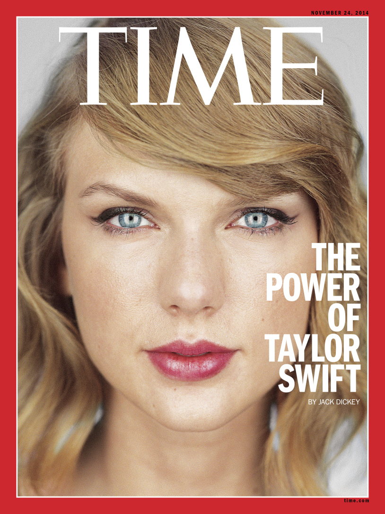
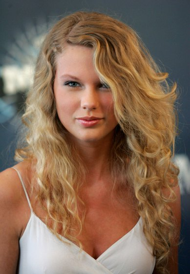
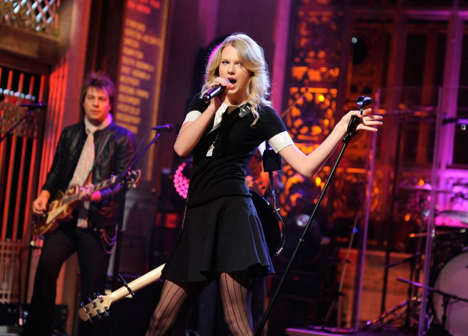
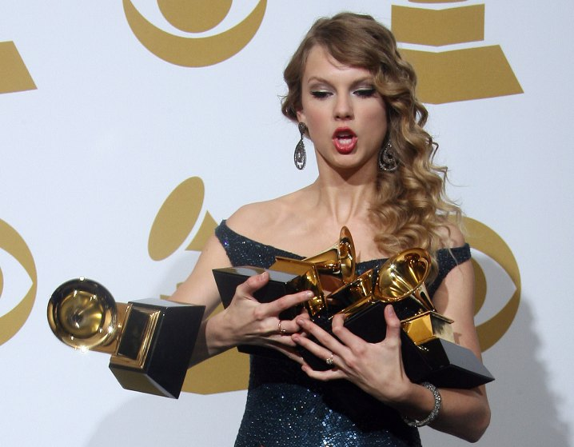
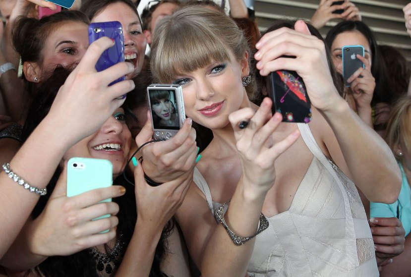
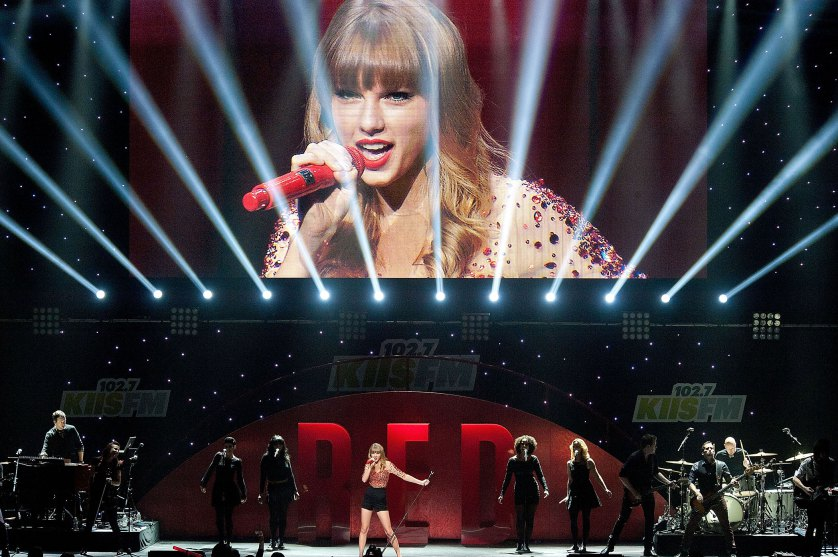
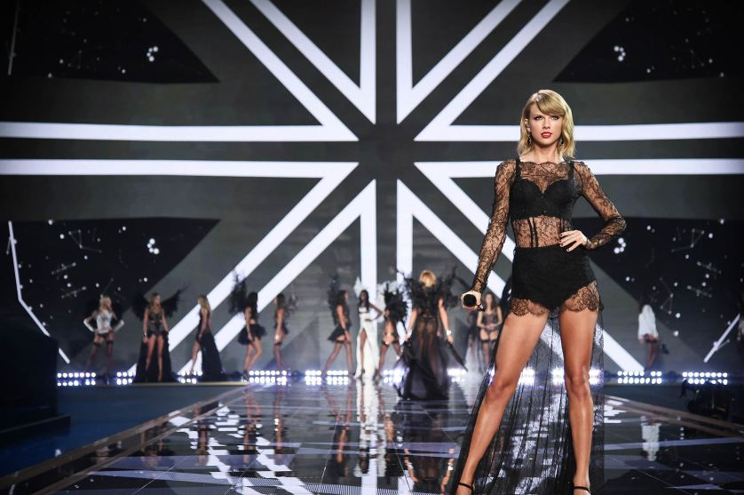

Life
Is it a struggle, being a role model for so many young women while trying to produce something artistically valid?
I don’t find a struggle with that balance, being looked at as a role model, because I think it’s a very obvious and natural thing for people to see you as, when you’re a singer. I’ve always felt very comfortable with it, for some reason. That in particular hasn’t been one of my struggles. I’ve struggled with a lot of things, but the idea that you’re living your life and it’s impacting other people, some of whom are very young, some of whom are in their most impressionable times and they’re discovering the music that tells them how they are going to live their lives and how they should feel and how it’s acceptable to feel, I think that that’s kind of exciting.
But it’s the same thing as living your life based on what your grandkids will say one day. I’m sure there will be things that my grandkids make fun of me for no matter what, but I’d really rather it be, “Look how awkward your dancing was in the ‘Shake It Off’ video! You look so weird, Grandma!” rather than “Grandma, is that your nipple?” I don’t make it as much about the millions of people who would be disappointed if I were to have some sort of meltdown or scandal or something that made everyone feel like my character wasn’t what they thought it was. I think more about the people in my life that would disappoint: my mom, my dad, my kids, if I ever have them. And that way it’s not as much pressure as thinking about the millions of little minds that you must be shaping. I’m trying to live my life with some sort of thoughtfulness put into my actions, but it’s not because I feel like I’m the president of the International Babysitters Club.
As a female celebrity, having your body picked over, in a way that doesn’t happen for male celebrities—how do you deal?
I refuse to buy into these comparisons, because you don’t see it happening to men. All you seem to see is “Which New Mother Is Sexier?” “Who’s the Hotter Mama?” “Who’s Got The Better Booty?” If we continue to show young girls that they are being compared to other girls, we’re doing ourselves a huge disservice as a society. I surround myself with smart, beautiful, passionate, driven, ambitious women. Other women who are killing it should motivate you, thrill you, challenge you and inspire you rather than threaten you and make you feel like you’re immediately being compared to them. The only thing I compare myself to is me, two years ago, or me one year ago. How does 1989 measure up to Red, sales-wise? You just try to lead by example, and you hope, someday, that if we talk about feminism enough, maybe we’ll start to actually see it make a difference in the way young girls perceive themselves and each other.
Does it annoy you to have photographers everywhere you go? Are you at risk of becoming a shut-in?
Yeah, every outing is documented. So any outing I’ve been on, you’ve seen photos of. Any other time, I’m at home. Or I have my friends over and we cook dinner and talk and sit on the roof and laugh about things and gossip and whatever.
It’s honestly like, if I’m in the mood to be held accountable for every single article of clothing on my body, and whether it matches, and if it clashes, and if it’s on trend, then I go out. But if I’m not interested in undergoing that kind of debate and conversation—regarding how I’m walking, whether I look tired, how my makeup is right, what’s that mark on my knee, did you hurt yourself?—I just don’t go out. I try to evaluate whether I’m in the right emotional space to deal with that, and if I’m not, then I just stay in. And I’m perfectly happy staying in.
Career
Why did you leave Spotify? I’m in an office of people who are upset they can’t stream your music.
Well, they can still listen to my music if they get it on iTunes. I’m always up for trying something. And I tried it and I didn’t like the way it felt. I think there should be an inherent value placed on art. I didn’t see that happening, perception-wise, when I put my music on Spotify. Everybody’s complaining about how music sales are shrinking, but nobody’s changing the way they’re doing things. They keep running towards streaming, which is, for the most part, what has been shrinking the numbers of paid album sales.
With Beats Music and Rhapsody you have to pay for a premium package in order to access my albums. And that places a perception of value on what I’ve created. On Spotify, they don’t have any settings, or any kind of qualifications for who gets what music. I think that people should feel that there is a value to what musicians have created, and that’s that. I wrote about this in July, I wrote an op-ed piece in the Wall Street Journal. This shouldn’t be news right now. It should have been news in July when I went out and stood up and said I’m against it. And so this is really kind of an old story.
What does writing a song do for you?
I see a lot of celebrities build up these emotional walls around themselves, where they let no one in, and that’s what makes them feel very lonely at the top. I just keep writing songs. And I kind of stay open to feeling humiliated and rejected, because before being a quote-unquote celebrity, I’m a songwriter. Being a celebrity means you lock your doors and close your windows and don’t let people in. Being a songwriter means you’re very attuned to your own intuition and your own feelings even if they hurt.
So I approach it much more from a songwriter’s perspective. But I do know how to pull myself out now, from that constant, never-ending, bottomless rabbithole of self-doubt and fear. I’ve been able to write songs and feel better. They clarify and simplify the emotions that you’re feeling. Nothing you do is going to make the pain stop. It just helps to have it clarified and simplified.
Does it annoy you when people say you don’t write your own songs, or that someone else is pulling the strings of your career?
I haven’t heard any of the people I respect in the music industry or in journalism, saying that they think I don’t write my own songs. I think, when I put out Speak Now, which was my third album, and I decided I was just going to write it entirely on my own, to me that was enough of a statement. I felt like I could move on from that. I felt like I had proved my point. That was when I felt free to collaborate with whoever I wanted, because if you actually listen to the music, you can tell that the lyrics are written by the same person. And it’s not a ghostwriter. It’s not some weird, you know—everyone’s got those weird Shakespeare theories that someone else did all his stuff for him. Not to ever compare yourself to Shakespeare. But people need to poke holes in things because of their own stuff. It’s not about me.
And we all know it’s a feminist issue. My friend Ed [Sheeran], no one questions whether he writes everything. In the beginning, I liked to think that we were all on the same playing field. And then it became pretty obvious to me that when you have people sort of questioning the validity of a female songwriter, or making it seem like it’s somehow unacceptable to write songs about your real emotions—that it somehow makes you irrational and overemotional—seeing that over the years changed my view. It’s a little discouraging that females have to work so much harder to prove that they do their own things. I see Nicki Minaj and Iggy Azalea having to prove that they write their own raps or their own lyrics, and it makes me sad, because they shouldn’t have to justify it.
1989
What was the goal of your new album, 1989?
With 1989, I was really putting my neck on the line, because I was the one saying I need to change directions musically. And my label and management were the ones saying “Are you sure, are you positive? This is risky.” And I was the one who had to come back every time and say, “No, this is what we’re doing.” When I put forth an album cover that didn’t have half my face on it, and tried to convince my label that this was the best way to sell an album, you know, I got some kind of interesting side-glance looks. But I knew that this was the best cover to represent this record, because I wanted there to be an air of mystery. I didn’t want people to know the emotional DNA of this album. I didn’t want them to see a smiling picture on the cover and think this was a happy album, or see a sad-looking facial expression and think, oh, this is another breakup record. When I wanted to call the album 1989, people on the team questioned that. Every single element of this album has been called into question, and I’ve had to say “No, this is how we’re doing it.” And the fact that we came out and did the kind of numbers we did in the first week—you have no idea how relieved I was, because it was all on me if this didn’t work. It was a little hard to sleep the night of the album release.
There’s a song on my album called “All You Had to Do Was Stay.” I was having this dream, that was actually one of those embarrassing dreams, where you’re mortified in the dream, you’re like humiliated. In the dream, my ex had come to the door to beg for me to talk to him or whatever, and I opened up the door and I went to go say, “Hi,” or “What are you doing here?” or something—something normal—but all that came out was this high-pitched singing that said, “Stay!” It was almost operatic. So I wrote this song, and I used that sound in the song. Weird, right? I woke up from the dream, saying the weird part into my phone, figuring I had to include it in something because it was just too strange not to. In pop, it’s fun to play around with little weird noises like that.
What do you have planned for the tour?
I know that with the way the fans have latched onto this album, the setlist will be predominantly songs from 1989. You know, when I go back and play songs I know they want to hear, like “Love Story” or “Trouble,” it’ll be interesting to reimagine them so that the fans get a new experience that feels in keeping with 1989. But I’m so excited. I have so many things I’ve been dreaming up for this.
If you look at the makeup of my previous music, as far as production elements go, there are a lot of live drums, acoustic guitars, electric guitars, and live bass. And if you look at the landscape of 1989, it’s mostly synths and automated drums and these kind of big epic synth pad sounds, and key bass, and layered vocals. I have a very big band, there are, what, 14 of us, so what you’re going to end up with is more of a live feel in that it’s going to be filled in and more dramatic with more layers to it, but never to the point where it’s going to feel noisy or overcrowded. The music on this tour is going to live a little bit in that world, and thank God, my fans really seem to like that world.
The challenge with a stadium show is making those people in the very top row feel like they got an intimate, personal experience. On the Red tour we achieved that sense of intimacy by having acoustic moments, and moments where I was telling stories about these songs. I don’t like to scream at the audience, I like to talk to them.
I really like for there to be something theatrical about what we do on stage. When I was younger, I was just obsessed with Broadway shows. As much as I can show these audiences an element of that theatrical nature to a performance, I think that it allows them to escape from their lives a little bit more. So when you have a show like that it’s very difficult to change up the setlist every night. I keep the setlist pretty much intact, but we have little variables—I usually do different acoustic songs every night. In the past, I have brought out dozens of guest artists not to perform my songs but to perform their songs and I’ll take a verse. And those are the things that make me the happiest, because the reality of the situation is that most of the kids in the audience have YouTubed the entire concert before they got there. They know exactly what’s going to happen next unless I call up another artist and have a secret rehearsal soundcheck and surprise the crowd with something they genuinely weren’t expecting. I should be getting on that now, look into a booking agent for these things.
But it’s worth it because I really want them to have that genuine moment of surprise. It’s very rare in this day and age to surprise people, but I really like doing it.
Influences
Is there someone you look to as a model of where you’d like your career to go? Are there women you look up to?
We’re taught to find examples for the way we want our lives to wind up. But I can’t find anyone, really, who’s had the same career trajectory as mine. So when I’m in an optimistic place I hope that my life won’t match anyone else’s life trajectory, either, going forward. I do have female role models in the sense of actresses like Mariska Hargitay. I think she has a beautiful life, and an incredible career, and I think she’s built that for herself. She’s one of the highest paid actresses—actors in general, women or men—on television, and she’s been playing this very strong female character for, what, 15 years now, something like that. And Ina Garten, the Barefoot Contessa. I really love her business, and how she sticks to who she is, and how people relate to it. In other industries, I have female role models. I just struggle to find a woman in music who hasn’t been completely picked apart by the media, or scrutinized and criticized for aging, or criticized for fighting aging—it just seems to be much more difficult to be a woman in music and to grow older. I just really hope that I will choose to do it as gracefully as possible.
Do you have a dream onstage guest?
I love Iggy Azalea, I love Haim. I’d say Vance Joy, but he’s opening up the tour, so he’ll be there anyway. The things that I try to really focus on when bringing out people as surprise guests is what do my fans really want to see, what would they lose their minds over? Not to show too many of my cards here—but I have probably 10 guests that I’m thinking about that would be amazing. But you know, these have to be artists that would get up there and play for the love of playing, because they’re not paid for being there, and they usually have to switch up their schedules. The people who have done it in the past—it’s been astonishing to me, because it’s been Nicki Minaj, and Usher, and T.I., these huge artists who could be anywhere else. And you can tell who loves playing live if they’re willing to come and play for free on one of my stadium shows.
aylor Swift

The 24-year-old pop star spoke with TIME this fall as she readied for the release of her new album and again as she watched its record reception. 'Other women who are killing it should motivate you,' she says.
But not everything could fit in the story, so here’s the rest of what Swift told TIME. The moment’s most successful recording artist has big theatrics planned for her 2015 tour. And she’s praying for an Iggy Azalea cameo. While she struggles to name a role model in the music industry, she finds herself looking up to Mariska Hargitay, the actress behind Olivia Benson, and Ina Garten, the Barefoot Contessa, these days.
Over the Years





